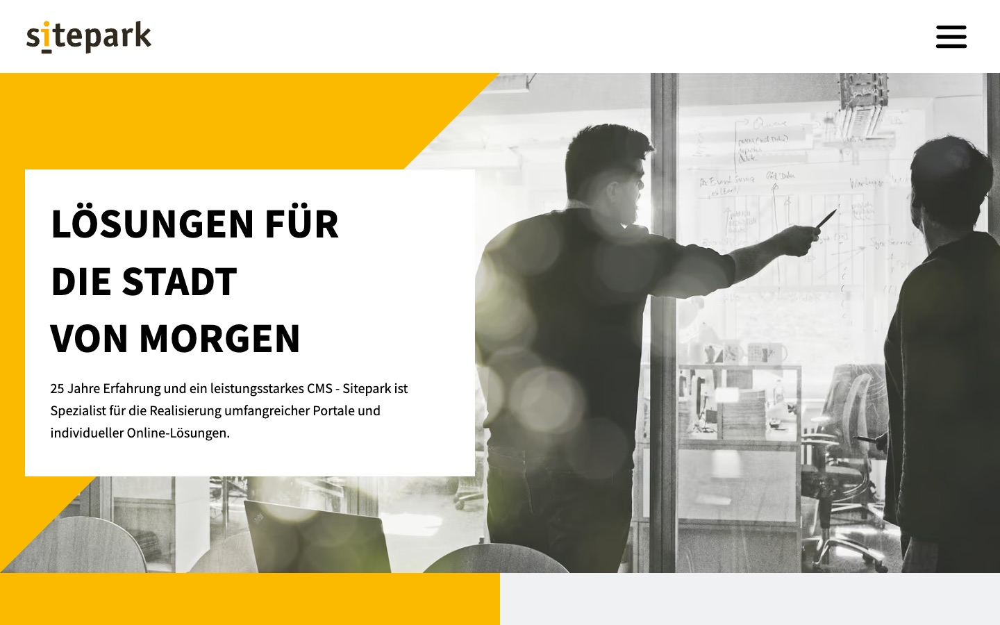

Klarheit
Inhalt vor Dekoration. Großzügiger Weißraum, eine klare typografische Hierarchie und eine Botschaft pro Abschnitt machen jede Seite in Sekunden erfassbar.
Sitepark Design System 2.0
Das visuelle Fundament des neuen Sitepark-Auftritts. Bewährte Markenwerte – Gelb, Anthrazit, Source Sans, der diagonale Bildanschnitt – übersetzt in ein präzises System nach den Prinzipien der Apple Human Interface Guidelines: klare Typografie, ein 8-Punkt-Raster, Materialien mit Tiefe und Bewegung mit Federphysik.
Gleicher Inhalt, gleiche Marke, neues Niveau. Regler ziehen, um den bisherigen mit dem neuen Auftritt zu vergleichen (Startseite, 1440 × 900 px).

Vorher Nachher01
Vier Leitsätze entscheiden jede Gestaltungsfrage – von der Wahl eines Abstands bis zur Dauer einer Animation.
Inhalt vor Dekoration. Großzügiger Weißraum, eine klare typografische Hierarchie und eine Botschaft pro Abschnitt machen jede Seite in Sekunden erfassbar.
Die Oberfläche tritt hinter den Inhalt zurück. Sitepark-Gelb ist Akzent und Bühne – nie Rauschen. Linien, Schatten und Farbe werden sparsam und bewusst gesetzt.
Glasmaterialien, weiche Schatten und Ebenen schaffen Orientierung. Bewegung folgt physikalischen Federn und erklärt Zusammenhänge, statt zu dekorieren.
Das Redesign entwickelt den bestehenden Auftritt weiter: Farben, Schrift, der gelbe Akzentbalken und der diagonale Bildanschnitt bleiben – nur präziser umgesetzt.
| Bereich | Bisher | Neu |
|---|---|---|
| Typografie | Source Sans Pro, statische Schnitte, Versal-Headline | Source Sans 3 Variable (200–900), fluide Skala mit optischem Tracking, Satzschreibung |
| Farbe | Fünf Einzelwerte | Token-System in drei Ebenen, Light & Dark Mode, geprüfte Kontraste |
| Layout | 50/50-Kachelraster | Erzählfluss in voller Breite, 8-pt-Raster, Breakpoints 734 / 1068 / 1440 |
| Navigation | Hamburger-Menü auf allen Geräten | Sichtbare Navigation mit gleitendem Scroll-Spy-Indikator und Glas-Material; Vollbild-Menü mobil |
| Bewegung | Einfache Fades | Federphysik nach SwiftUI-Modell, gestaffelte Reveals, scrollgetriebene Effekte, „Bewegung reduzieren“ |
| Kennzahlen | Kreise mit Zählern | Aktivitätsringe mit Verlauf und Glow, tabellarische Ziffern |
| Form | Eckige Kästen | Kantig mit minimaler Rundung (1–4 px), Tiefe über Schatten und Glas |
| Partner | Logo-Liste | Klickbare Karten mit Logo-Kacheln |
| Barrierefreiheit | Skip-Link | Zusätzlich Fokusführung, inertes Menü, 44-pt-Touchziele, erhöhter Kontrast, Dark Mode |
| Technik | Astro + Svelte | Statisches HTML/CSS/JS ohne Framework, Partials-Build, Cross-Document View Transitions |
02
Das Logo bleibt unverändert. Neu ist seine technische Form: Die dunklen Buchstaben folgen currentColor und passen sich hellen wie dunklen Flächen an – das „i“ bleibt immer Logo-Gelb.
Auf Weiß – Standard
Auf Anthrazit – Schrift in Weiß
Schutzzone: rundum ½ Logohöhe · Mindesthöhe digital 24 px
Nicht auf Gelb – das „i“ verschwindet
Nicht verzerren oder neu proportionieren
Keine Schatten, Drehungen oder Effekte
Zwei Elemente aus dem bisherigen Auftritt tragen die Wiedererkennung: der gelbe Akzentbalken unter Überschriften und der diagonale Bildanschnitt im Hero.
Balken: Breite clamp(40px, 1.15em, 72px), Höhe ≈ 0,085 em, rechteckig (1 px Rundung). Zeichnet sich beim Einblenden mit --spring-smooth von links.
Diagonale: polygon(61% 0, 100% 0, 100% 100%, 39% 100%) ab 1069 px; mobil als ansteigende Oberkante. Öffnet sich beim Laden als Wischbewegung.
03
Drei Ebenen: Primitive halten die Markenwerte, Semantik-Tokens geben ihnen Bedeutung und passen sich Theme und Fläche an, Komponenten nutzen ausschließlich Semantik. Alle Werte auf dieser Seite werden live aus dem CSS gelesen.
Werte unter dem Hex-Code: Kontrast gegenüber Weiß. Gelb ist eine Flächen- und Akzentfarbe – als Text auf Weiß erreicht es nur 1,7 : 1. Für gelbe Akzent-Texte gilt --sp-yellow-800.
Jeder Token hat einen Wert für Hell und Dunkel (light-dark()). Komponenten referenzieren nur diese Namen.
| Token | Hell | Dunkel | Verwendung |
|---|---|---|---|
--color-bg | Seitenhintergrund | ||
--color-bg-secondary | Abschnitte im Wechsel, Bühnen | ||
--color-bg-tertiary | Hover auf sekundären Flächen, Platzhalter | ||
--color-bg-elevated | Karten auf getönten Flächen | ||
--color-text | Überschriften, Fließtext | ||
--color-text-secondary | Leads, Beschreibungen (AA) | ||
--color-text-tertiary | Metadaten, nur große/kurze Texte | ||
--color-separator | Haarlinien, Rahmen | ||
--color-fill | Getönte Buttons, Chips | ||
--color-accent | Primäre Aktionen, Ringe, Akzentbalken | ||
--color-accent-text | Eyebrows, Rollen, Chevrons | ||
--color-on-accent | Text auf Gelb | ||
--color-focus | Fokusring | ||
--color-success | Systemfarbe: Erfolg | ||
--color-critical | Systemfarbe: Fehler, Warnung | ||
--color-info | Systemfarbe: Hinweis |
Eine Fläche definiert die Semantik-Tokens neu. Alles, was darin liegt, sieht automatisch richtig aus – Buttons auf Gelb werden dunkel, Akzent-Texte auf Anthrazit gelb.
Gelb auf Weiß · 1,7 : 1 – nicht lesbar
--sp-yellow-800 auf Weiß · 5,4 : 1 (AA)
Tinte auf Gelb · 9,7 : 1 (AAA)
04
Source Sans 3 – der direkte Nachfolger der bisherigen Source Sans Pro – als variable Schrift. Ein Font-File für alle Stärken, selbst gehostet und ohne Anfragen an Dritte.
Alle Stufen skalieren fluide zwischen 375 px und 1440 px Viewport. Das Tracking wird mit zunehmender Größe enger – wie bei SF Pro. Die Zeile „Jetzt“ zeigt die berechneten Werte bei aktueller Fensterbreite.
Stadt von morgen
Lösungen für die Stadt
Kommunale Internet-Auftritte
Sitepark entwickelt kommunale Internet-Auftritte seit 1997.
Beratung und Konzeption
Thorsten Liebold
Wir engagieren uns für Ihre Projekte und begleiten und beraten Sie bis zur professionellen Lösung.
Tutorials und Dokumentation
In enger Abstimmung mit kommunalen Kunden entwickelt und optimiert für große Redaktions-Teams und Websites mit vielen 1.000 Seiten.
Fachinformatiker und seit 2008 bei Sitepark.
Vernetzt, sicher und innovativ
Amtsgericht Münster HRB 5017 · USt-Id. DE 200998038
© Sitepark GmbH
Überschriften in normaler Groß-/Kleinschreibung – ruhiger, schneller lesbar.
Große Größen eng (bis −0.032 em), kleine leicht offen (+0.008 em).
Fließtext 60–75 Zeichen pro Zeile (--container-text).
text-wrap: balance für Titel, pretty gegen Hurenkinder.
hyphens: auto mit lang="de"; weiche Trennstriche (­) in langen Komposita.
Kennzahlen mit tabular-nums – kein Springen beim Hochzählen.
05
Ein 8-Punkt-Raster mit 4-Punkt-Halbschritten. Große Abstände wachsen fluide mit dem Viewport – Weißraum ist ein gestalterisches Mittel, kein Rest.
--space-14--space-28--space-312--space-416--space-520--space-624--space-732--space-840--space-948--space-1064--space-1180--space-1296--space-13128--space-14160| Token | 375 px | 1440 px | Einsatz |
|---|---|---|---|
--section-pad | 80 | 168 | Vertikaler Abstand eines Abschnitts |
--gutter | 20 | 48 | Seitenränder |
--grid-gap | 16 | 28 | Abstand zwischen Karten und Spalten |
--stack-lg | 40 | 72 | Abstand Kopf → Inhalt eines Abschnitts |
--container-text | 704 px | Lesetexte, Rechtstexte | |
--container | 1080 px | Standard-Inhaltsbreite | |
--container-wide | 1320 px | Kachel-Raster, Hero, Footer | |
| Bereich | Breite | Verhalten |
|---|---|---|
| Kompakt | bis 734 px | Eine Spalte, Team als wischbare Galerie, Bild über Text |
| Regulär | 735 – 1068 px | Zwei Spalten, Kontakt-Button in der Leiste, Vollbild-Menü |
| Breit | ab 1069 px | Navigation sichtbar, diagonaler Hero, vier Spalten |
| Groß | ab 1441 px | Container gedeckelt, Typografie auf Maximalwerten |
Zwölf Spalten ab 735 px, vier Spalten darunter; Spaltenabstand --grid-gap.
06
Kantig mit minimaler Rundung: Ecken werden nur um 1 bis 4 px gebrochen – präzise, sachlich, nah am bisherigen Auftritt. Tiefe entsteht über mehrschichtige, sehr leichte Schatten und Materialien, nicht über runde Formen.
--radius-xs
Akzentbalken, Punkte
--radius-sm
Tokens, Marker
--radius-md
Code, Tabellen
--radius-lg
Karten, Glas
--radius-xl
Porträts, Partner
--radius-2xl
Kacheln, Panels
--radius-control
Buttons, Chips, Toast
Durchscheinende Flächen mit Hintergrund-Unschärfe und Sättigung (--material-blur). Die Glaskarte erhält zusätzlich eine Lichtkante – angelehnt an Liquid Glass.
07
Bewegung folgt Federn statt starrer Kurven – berechnet nach dem SwiftUI-Modell (Response, Bounce) und als CSS linear() hinterlegt. Bei „Bewegung reduzieren“ werden alle Federn zu kurzen Überblendungen.
Jede Animation erklärt Herkunft, Zustand oder Hierarchie.
Federn reagieren natürlich und laufen ohne harten Stopp aus.
Kurze Wege (≤ 32 px), weiches Einblenden, maximal leichter Überschwinger.
prefers-reduced-motion wird überall respektiert.
Kurven werden live aus den Tokens gezeichnet. „Abspielen“ bewegt den Punkt mit genau dieser Kurve.
| Token | Wert | Einsatz |
|---|---|---|
--duration-instant | 100 ms | Gedrückt-Zustand |
--duration-fast | 200 ms | Farbwechsel bei Hover |
--duration-base | 320 ms | Menü, Toast, Material |
--duration-slow | 600 ms | Bilder einblenden |
--duration-reveal | 1000 ms | Einblenden beim Scrollen |
--stagger | 90 ms | Versatz innerhalb einer Gruppe |
Reveal: 32 px nach oben, 90 ms Versatz
Unschärfe weicht
Blur-in: für Überschriften im Hero
120
Ring schließt sich, Zahl zählt mit
Taktil: Buttons skalieren beim Drücken auf 96,5 %. Loslassen zeigt den Toast mit Bouncy-Feder.
08
Linien-Icons im Stil der SF Symbols: 24er-Raster, Kontur 1,75, runde Enden und Ecken. Sie stehen als SVG-Sprite bereit und übernehmen die Textfarbe.
Raster 24 × 24, Sicherheitsabstand 2 px
Kontur 1,75 (UI) · 3 auf 64er-Raster (Kennzahlen)
Enden rund · Farbe currentColor
Größe 1,25 em neben Text, 28 px in Themen-Kacheln
Einbinden: <svg class="icon"><use href="#i-phone"/></svg>
09
Alle Bausteine der Website als lebende Beispiele. Der HTML-Code unter jedem Beispiel wird direkt aus der Vorschau erzeugt und ist damit immer aktuell.
Rechteckig mit 2 px Rundung (--radius-control), mindestens 44 pt Trefferfläche. Pro Bereich höchstens ein primärer Button. Kleine Buttons erweitern ihre Trefferfläche unsichtbar.
Vernetzt, sicher und innovativ
Nur auf Fragen, die nicht gestellt werden, gibt es garantiert keine Antwort!
Unser CMS
Das von Sitepark in Java entwickelte Headless-CMS ist ein solides Werkzeug mit geringem Wartungsaufwand.
InfoSite · seit 2008
Fachinformatiker und seit 2008 bei Sitepark. Kennt InfoSite in- und auswendig.

IT-Dienstleister für öffentliche Verwaltungen in NRW.
25 Tsd.
Commits pro Jahr
7 Tsd.
Redakteur:innen arbeiten mit InfoSite
role="status"
Glas-Leiste (56 px) mit Logo, vier Ankern und Kontakt-Button. Der aktive Abschnitt wird durch einen gleitenden Indikator (Snappy-Feder) markiert. Unter 1069 px öffnet ein Zwei-Linien-Schalter ein Vollbild-Menü; der Rest der Seite wird dabei inert, Esc schließt und gibt den Fokus zurück.
10
Für einen Anbieter kommunaler Portale ist Barrierefreiheit Kernkompetenz – der eigene Auftritt geht mit gutem Beispiel voran.
Alle drei Textstufen ≥ 4,5 : 1 (axe-geprüft). Gelb nur als Fläche, Akzent-Text in #8A6300.
2-px-Fokusring mit 3 px Abstand, passend zur Fläche (Tinte oder Gelb).
Nach HIG – auch kleine Buttons erweitern ihre Trefferfläche.
Alle Animationen, Federn und Zähler respektieren die Systemeinstellung.
Folgt dem System; prefers-contrast: more verstärkt Linien und Sekundärtexte.
Skip-Link, header/main/footer, Überschriften-Hierarchie, beschriftete Navigationen.
Hintergrund wird inert, Esc schließt, Fokus kehrt zum Schalter zurück.
Inhalte, Zahlen und E-Mail-Adresse (per CSS) bleiben sichtbar.
11
Statisches HTML, CSS und JavaScript ohne Framework. Gemeinsame Bausteine (Navigation, Footer, Icons) werden mit einem kleinen Build-Skript ohne Abhängigkeiten zusammengesetzt.
# Seiten neu bauen (nach Änderungen in src/)
python3 tools/build.py
# Tokens für Design-Tools exportieren
python3 tools/export-tokens.py
# Lokale Vorschau
python3 -m http.server 8765Keine Hex-Werte und keine --sp-*-Primitive in Komponenten.
Ausschließlich --space-* und die fluiden Layout-Tokens.
Federn und Dauern nur über --spring-* / --duration-* – dann greift „Bewegung reduzieren“ automatisch.
Moderne Features (corner-shape, scrollgetriebene Animationen) immer mit Rückfall.